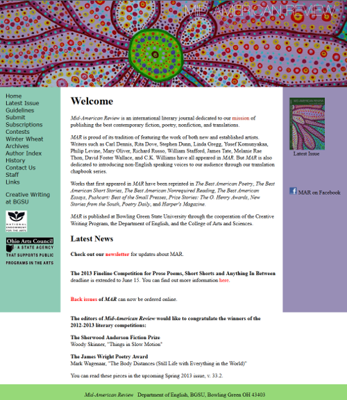
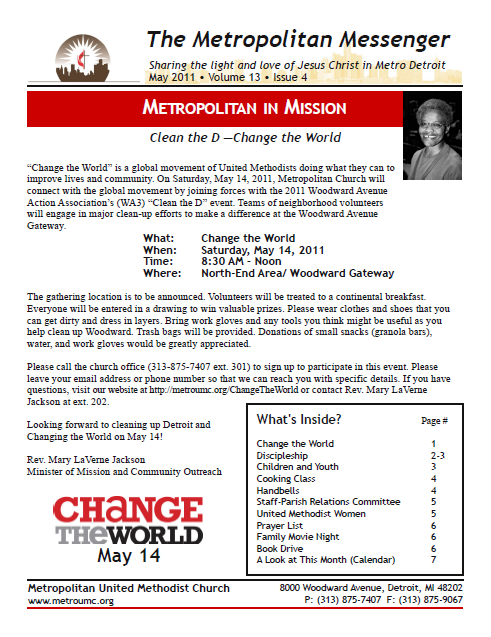
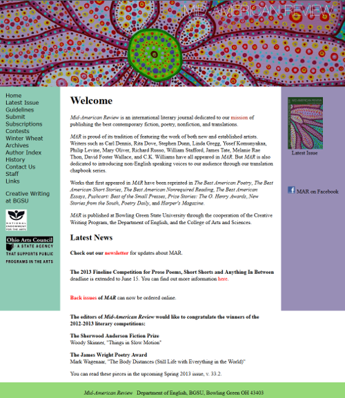
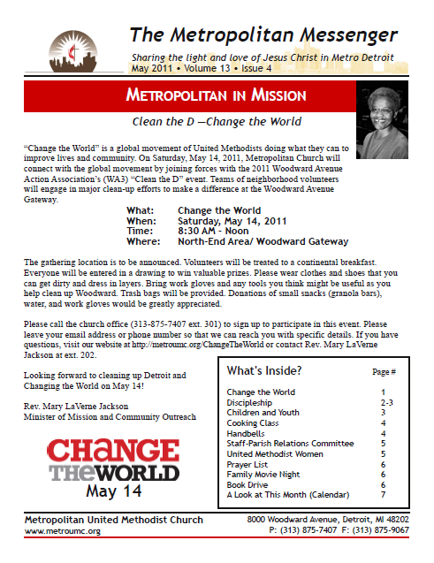
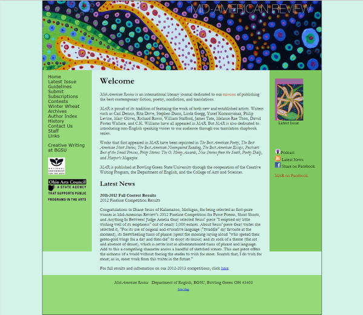
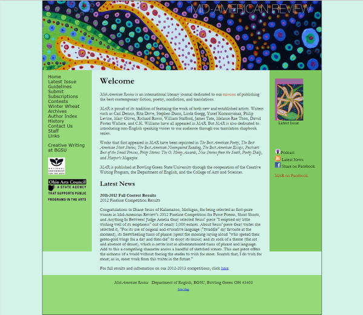

Human. Web Developer. Writer. Poet. Lover of words and code.
Web Development
I build websites and web apps in a front-end development capacity. I care about responsive design and accessibility. I support open source and free software and try to contribute to open source projects when I can.
- Tools I Use
- HTML5, CSS3, Sass, Compass, jQuery, JavaScript, Drupal, WordPress, Git, Gimp, Drush, the trusty command line
- What I Am Learning Currently:
- Porting themes into Drupal and WordPress, module development in Drupal, PHP, Ajax
- Drupal Theming: I'm a Drupal lover and am taking my front-end development skills and applying them to custom Drupal theming.
- Design: Challenges my brain in all sorts of lovely ways.
- Mobile development
I started building sites as a kid. In college, I took a course on Web Development and loved it, but opted not to take more computer science courses. Instead, I majored in American Studies and used every chance I could get to build websites. During college and after college, much of my work involved print design. In 2009, I started working at a nonprofit in Detroit where my primary responsibility involved communications materials, including administering the website. I dived into open-source content management systems and Drupal as a way to better meet the nonprofit's website needs. I've been learning about web development ever since.
Web Development Training Long-Term Training Build a Dynamic Website Grand Circus, Detroit, MI September 30 - December 9, 2013 Topics covered: HTML, CSS, Bootstrap, JavaScript, jQuery, Git Modern Front-End Development coLearning @ The Factory, Grand Rapids, MI April 30 - June 2013 Topics covered: HTML5, CSS3, Responsive Design, PSD to HTML/CSS, Git Volunteer Experience Teaching Assistant Getting Sassy With CSS Girl Develop It December 2013 Volunteer MediaFront Module, Drupal 2011 - 2012 Professional Experience Freelance Front-End Developer June 2013 - Present Technical Editor Mid-American Review October 2013 - July 2013 Web Administrator Metropolitan United Methodist Church November 2009 - July 2012Portfolio


 



 


- Screen Emulator
- What: Design, Development
- Site: Screen Emulator
- Tools Used: JavaScript, jQuery, HTML, CSS
- I built responsive design testing tool. In the summer of 2013, I looked online for responsive design tools that were free and easy to use and could not find any tools. In the fall of 2013, during the duration of my Build A Dynamic Website class,. I got a lot of help from the friendly people at Atomic Object Detroit.
- Company Site Redesign
- What: Image to HTML/CSS
- Tools Used: CSS3, HTML5
- Client: Sandbender Software
- Summary: Using the designer's files, converted image files to HTML and CSS.
- Application Redesign, Front-End
- What: User Interface, Responsive Design
- Tools Used: CSS3, HTML5
- Client: Userwise Solutions
- Summary: Updated visual interface and theme for a pre-existing application. Worked one-on-one with back-end developer to improve user experience. Streamlined front-end of application.
- Website Setup and Administration
- What: Drupal Setup, Website Administration, Video Editing
- Site: Metropolitan UMC
- Tools Used: HTML, CSS, Drupal 6, Drupal 7, GIMP, FFmpeg, CPanel
- Who: Metropolitan United Methodist Church
- Summary: Built and configured a site using Drupal as the content management system. Updated content on site and performed Drupal updates.
- Winter Wheat Update
- What: Website Administration, Responsive Design
- Who: Mid-American Review
- View: Screenshot, Site
- Tools Used: CSS, HTML
- Summary: I took pre-existing inline styles and converted them to an external stylesheet. Using the pre-existing theme, I accounted for accessibility and responsiveness in my adjustments to the theme. Pages were updated for the 2013 Festival and included cleaner code.
- MAR Theme Updates
- What: Theme Update, Website Administration
- Who: Mid-American Review
- Tools Used: CSS, HTML, JavaScript, GIMP
- Screenshots: Spring 2013, Fall 2012
- Summary: Each time the literary journal is released, the site theme is updated to reflect the cover art of the most recent journal. Using the cover artwork to inform the design, the theme was updated for 33.1 (Fall 2012) and 33.2 (Spring 2013).
- Book Discussion Site
- What: Responsive Design, Development
- Site: The Village of Villette
- Tools Used: HTML, CSS, Bootstrap
- Summary: One of the projects I worked on and built upon while a student in the Build a Dynamic Website at Grand Circus was a community site to celebrate and discuss the work of an author.
- Music Page
- What: Responsive Design, Development
- Site: Music
- Tools Used: HTML, CSS
- Summary: One of the projects I worked on in the Build a Dynamic Website class.
Projects
The tool is still currently under development.
{kind=link}
{kind=link}
{kind=link}